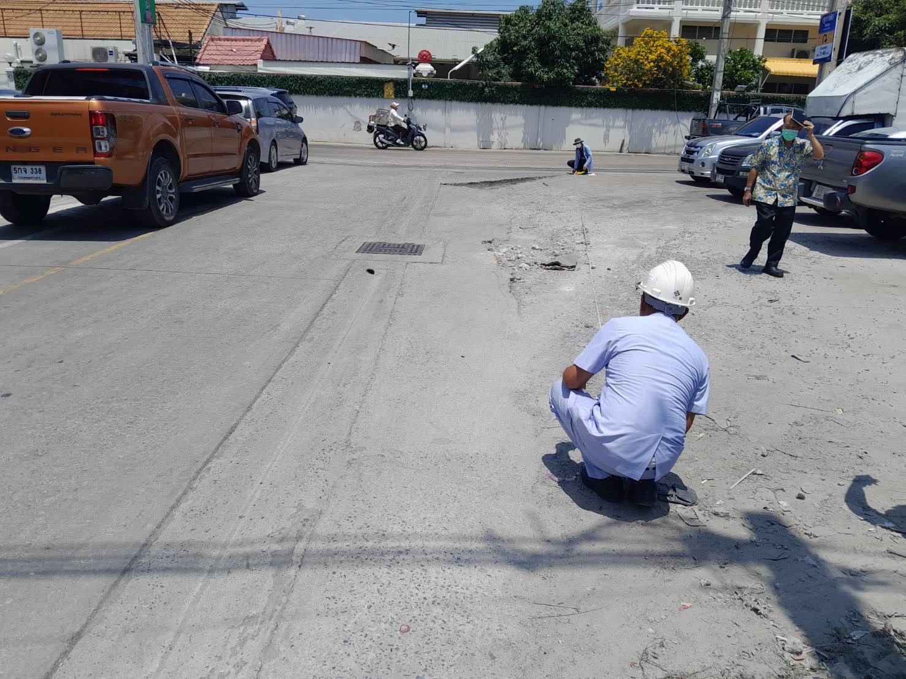
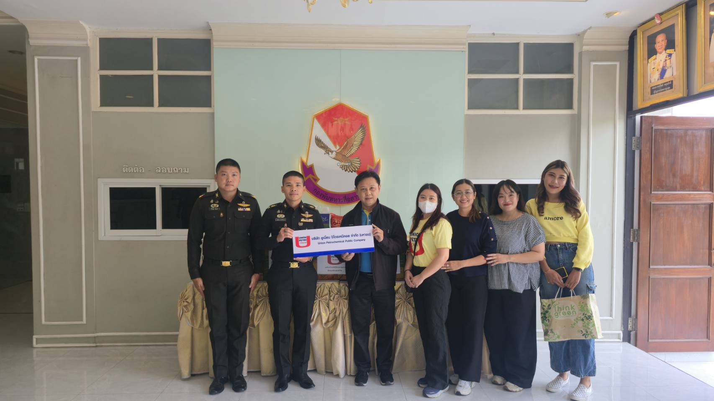
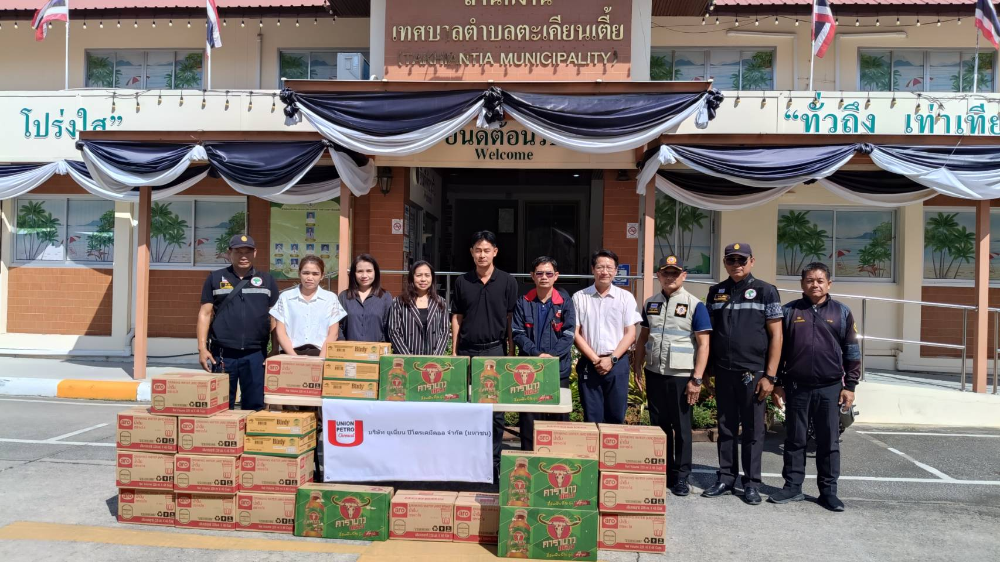

In the chemical industry sector, sustainable business operations do not merely mean developing environmentally friendly production technologies or efficiently managing resources, but also encompass social responsibility and participating in sustainable community development within the context of ESG (Environmental, Social, and Governance) principles.
Union Petrochemical Public Company Limited recognizes its role in creating a positive impact on society through various projects focusing on uplifting the quality of life of surrounding communities, promoting environmental and safety education, as well as supporting social activities that help mitigate the impacts of business operations.

The Company emphasizes conducting Corporate Social Responsibility (CSR) activities and engaging with communities in its operational areas seriously and continuously. This aims to build good relationships between the organization and the community, reduce impacts, and Create Shared Value across economic, social, and environmental dimensions. We use the PDCA management framework as a guideline to ensure sustainability and continuous improvement.
1. Plan
1.1 Study Community Context
- Analyze areas surrounding operational sites or those related to the supply chain.
- Listen to stakeholders such as community leaders, local government organizations, and schools to gather information or co-create activities.
1.2 Build Partnerships
- Integrate work with government agencies, private sectors, or Non-Governmental Organizations (NGOs) to expand impact and create sustainable outcomes.
2. Do
2.1 Execute and Implement Activities
- Proceed according to established plans, emphasizing the participation of employees and community members.
- Allocate resources—budget, personnel, and time—appropriately and transparently.
2.2 Communicate and Build Understanding
- Continuously communicate with stakeholders regarding the objectives, procedures, and benefits of the activities.
3. Check
3.1 Monitor Progress and Evaluate Performance
- Verify the alignment of activities with the project plan.
- Evaluate the outcomes quantitatively and qualitatively, such as the number of participants, satisfaction levels, and behavioral changes.
3.2 Prepare Reports and Summarize Results
- Communicate results to management and relevant stakeholders.
- If problems arise, identify causes and establish improvement approaches.
4. Act
4.1 Summarize Lessons Learned and Recommendations
- Gather feedback from participants, the community, and the team to analyze for future improvement guidelines.
4.2 Improve Plans for the Next Cycle
- Use evaluation data to review and refine the planning process, such as expanding project scope, deepening activities, or changing operational methods.
4.3 Integrate into Corporate Strategy
- Forward information and outcomes into the ESG/CSR strategic plan to ensure long-term alignment and shared goals with the organization.

1. Traffic Route Improvement and Community Repair Project
The Company focuses on uplifting the quality of life and safety of communities surrounding its operational sites. Therefore, it initiated a project to improve the road surface and pour concrete around the Suksawat warehouse area (Soi 19 entrance) to repair damaged and potholed sections. This operation not only increases transportation efficiency but also ensures that community members using the route can commute conveniently and safely, reducing the risk of travel accidents.

2. Sharing Kindness, Caring From Our Hearts Project
The Company co-sponsored basic necessities and essential consumer goods for operational units in the Thai border areas. This is to express our care and boost the morale of dedicated officers maintaining peace and order along the borders, while also aiming to be a part of alleviating hardship and extending aid to those affected in conflict zones.

3. Supporting the "7 Dangerous Days" Activity During the New Year Festival
The Company recognizes the importance of public travel safety during the festive season. We have therefore provided necessary consumer goods to Takian Tia municipal officials at public service points to facilitate and boost the morale of officers working during the 7 dangerous days. This activity aims to contribute to reducing accidents and ensuring the safety of commuters, so everyone can return home and travel happily and safely.